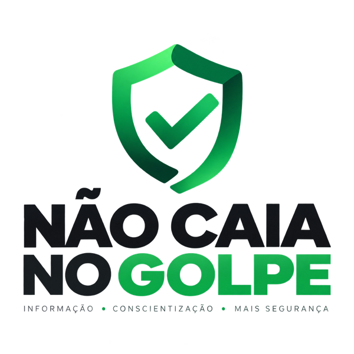

O Não Caia no Golpe é uma iniciativa de educação em segurança digital. Explicamos, em linguagem simples, como funcionam os golpes mais comuns no Brasil, quais sinais denunciam cada um e o que fazer se você já caiu.
Nosso objetivo

Nosso objetivo é preparar você para identificar e escapar de golpes. Os golpes mudam o tempo todo, mas a lógica por trás deles se repete: pressa, medo e confiança mal colocada.
Explicamos tanto o lado técnico quanto o comportamental de cada golpe. Quanto mais gente souber reconhecer os sinais, menos golpes dão certo, em casa e no trabalho.
Sem fins lucrativos
O projeto não visa lucro financeiro. Não vendemos produtos, não cobramos pelo conteúdo, não exibimos anúncios e não recebemos comissão por indicar serviços. Todo o material é gratuito e pode ser compartilhado com família, amigos e colegas de trabalho.
Quem faz
O site é uma iniciativa em parceria entre duas empresas brasileiras e consultores independentes:
Resolve Fraude
Empresa especializada em prevenção e resposta a fraudes. Traz a experiência de quem acompanha de perto como os golpes acontecem e como as vítimas podem agir.
resolvefraude.com.br →CyberSec360
Empresa de segurança da informação e conformidade. Contribui com a visão técnica sobre ataques digitais, proteção de dados e boas práticas de segurança.
cybersec360.com.br →Consultores independentes
Profissionais de segurança digital e prevenção a fraudes que colaboram voluntariamente com a revisão dos guias e com casos reais (sempre sem identificar ninguém).
Como escrevemos os guias
- Fontes oficiais: regras e números vêm do Banco Central, da Febraban, do INSS, do Procon e de outros órgãos públicos. Cada guia lista suas fontes no final.
- Casos reais: partimos de golpes que estão acontecendo, relatados por vítimas, bancos e pelos parceiros do projeto.
- Revisão: os textos são revisados por profissionais de segurança e prevenção a fraudes antes de publicar.
- Atualização: golpes e regras mudam. Todo guia mostra a data da última atualização, e revisamos o conteúdo quando surge uma mudança importante, como novas regras do Pix.
O que não fazemos
Não atendemos casos individuais, não recuperamos dinheiro e não representamos vítimas. Se você caiu num golpe, procure primeiro o seu banco e registre boletim de ocorrência. O guia Caí no golpe do Pix: o que fazer agora mostra o passo a passo.
Fale com a gente
Encontrou um erro, tem uma sugestão de guia ou recebeu uma mensagem suspeita que vale um alerta? Escreva para contato@naocaianogolpe.com.br. Corrigimos os erros apontados e atualizamos a data do guia.